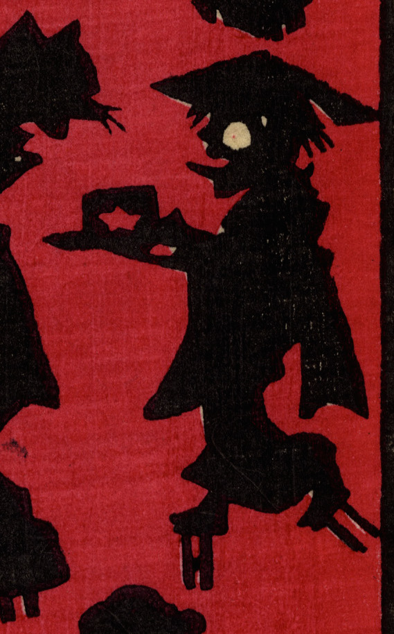

破れた笠をかぶり、舌を出して歩く化物。高下駄を履いて、手には四角い何かを持っている。
著作者：小林英次郎／出典：親書誌：U426_nichibunken_0269：しん板あんどううつしゑ；シンパン アンドウ ウツシエ／日付：2014／資源識別子：U426_nichibunken_0269_0008_0000
Copyright (c)2010- International Research Center for Japanese Studies, Kyoto, Japan. All rights reserved.